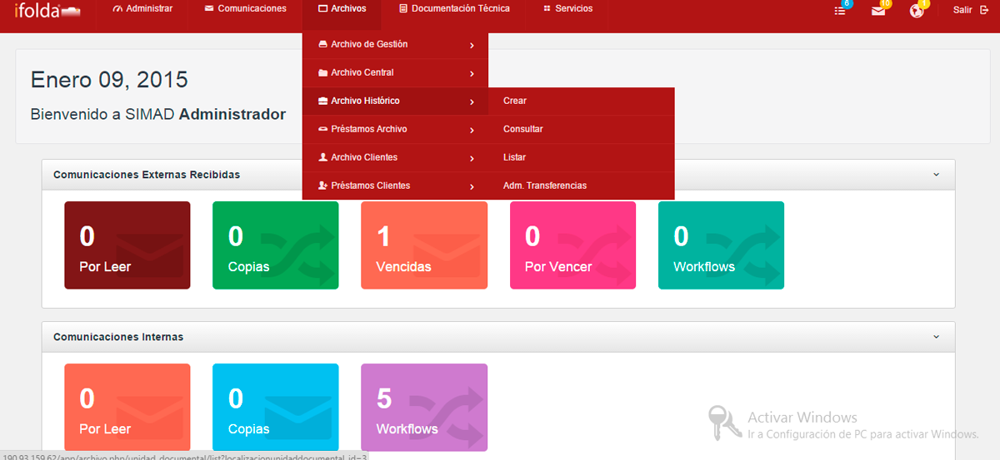
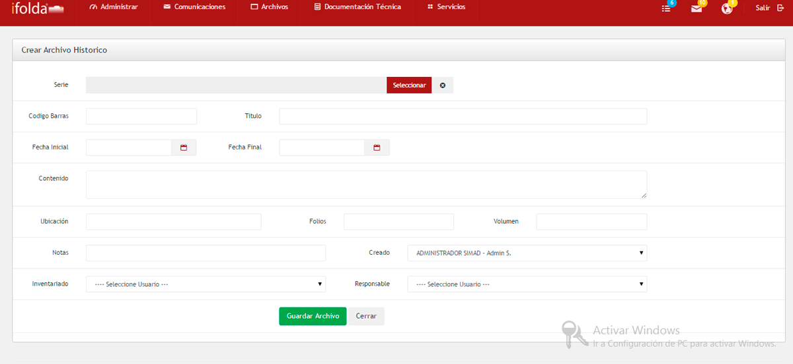
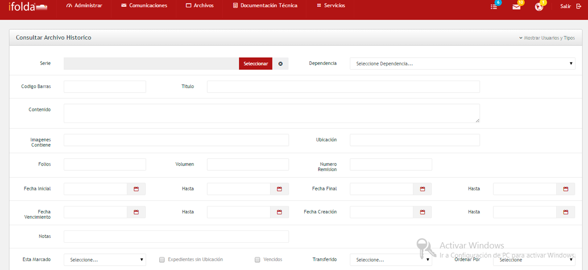
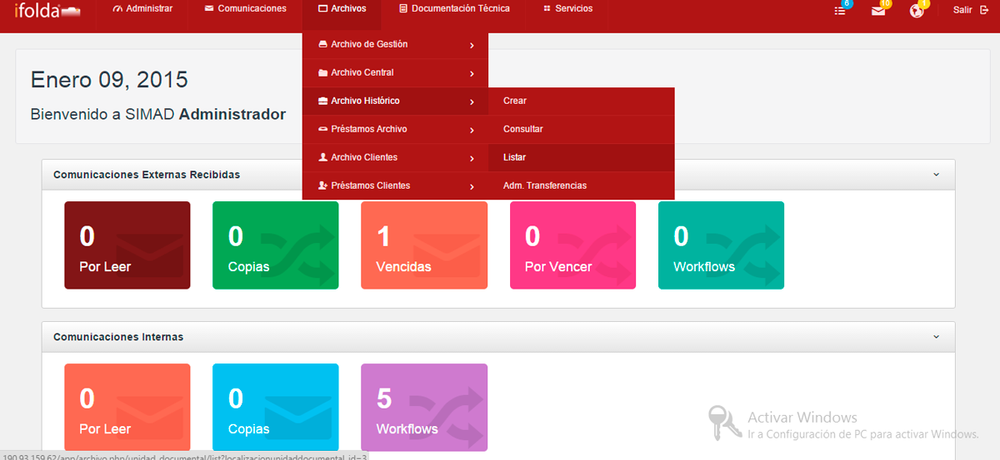
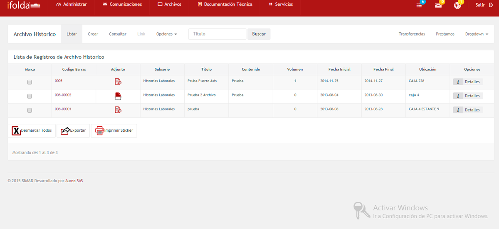
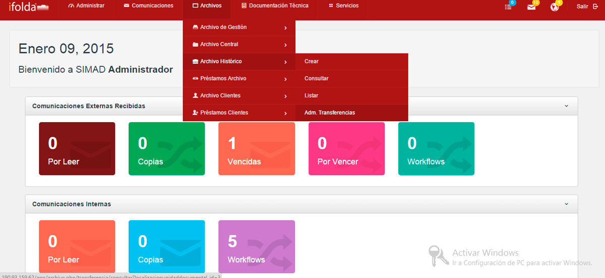
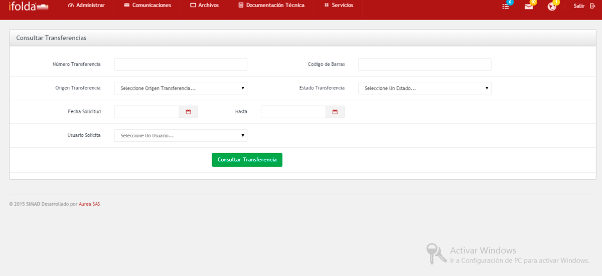

El módulo de Archivo Histórico permite la administración de los archivos de la organización que terminaron su período de retención, pero que tienen algún valor histórico y por lo tanto se deben almacenar y custodiar por un tiempo prudencial.
Crearir a inicio
La opción crear permite al usuario crear un archivo en Archivo Histórico para ser procesado en el sistema SIMAD.
Para crear un Archivo Histórico realice los siguientes pasos:

Consultarir a inicio
La opción Consultar permite consultar los archivos que se encuentran en Archivo Histórico en el sistema SIMAD.
Para consultar un Archivo Histórico realice los siguientes pasos:

Listarir a inicio

La opción listar muestra el listado de las distintas unidades documentales que se encuentran en Archivo Histórico en el sistema SIMAD 4.0.
Para ver las unidades documentales de Archivo Histórico realice los siguientes pasos:

Administrador de transferenciasir a inicio

Permite aceptar o rechazar las transferencias al Archivo Histórico en el sistema SIMAD.
Para consultar las listas de transferencia en Archivo Histórico realice alguno de los siguientes pasos:
